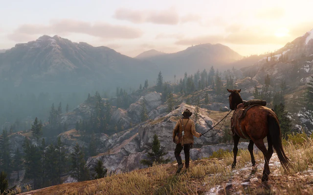

Red Dead Redemption 2 é, sem rodeios, uma obra espetacular e uma verdadeira aula de desenvolvimento. Durante muito tempo, considerei este título como um jogo tecnicamente perfeito: o nível de fotorrealismo, a riqueza das animações e a ausência de falhas técnicas impressionam até hoje. A atenção aos detalhes reside nas sutilezas do mundo aberto, onde os NPCs e animais possuem rotinas próprias, carcaças se decompõem organicamente com o tempo e até a barba de Arthur Morgan cresce de forma realista. Embora a jogabilidade adote uma cadência mais sóbria e pé no chão — diferentemente da liberdade e das possibilidades dinâmicas de títulos como Zelda: Tears of the Kingdom —, essa escolha serve perfeitamente ao seu propósito. O game não busca ser apenas divertido no sentido convencional, mas sim oferecer uma experiência imersiva e cinematográfica que exige calma para ser apreciada. Trata-se de um feito técnico extraordinário de orçamento milionário -600 milhões de dólares- que, no que tange ao realismo, dificilmente será superado antes da chegada do próximo grande projeto da Rockstar(GTA VI). Tudo isso é coroado por uma narrativa emocionante e profunda, que conduz a jornada de Arthur de maneira comovente e deixa lições marcantes sobre escolhas e redenção.
O verdadeiro grande trunfo de Red Dead Redemption 2 reside na construção de seu mapa, amplamente reconhecido como um dos mundos abertos mais vivos, orgânicos e detalhados já criados na história dos games. O jogo transita com maestria entre a imensidão contemplativa de uma natureza intocada e vilarejos pulsantes, onde cada cidadão possui uma rotina própria de trabalho e descanso. Essa imersão é elevada por um sistema de eventos aleatórios impecável: ao percorrer os caminhos, o jogador se depara de forma natural com viajantes precisando de ajuda, emboscadas armadas por bandidos ou interações inusitadas com a fauna local.
Além da riqueza estética e geográfica dos cenários, a interatividade impressiona pela enorme variedade de atividades secundárias disponíveis, como caça, pesca, jogos de azar e assaltos planejados. Essa dualidade entre a liberdade para explorar o mundo no seu próprio ritmo e a constante sensação de que o mapa existe independentemente da ação do jogador faz do ambiente de Red Dead 2 uma obra-prima do design de jogos, estabelecendo o ecossistema mais rico e envolvente já visto na mídia.
É impossível analisar Red Dead Redemption 2 sem reverenciar o patamar visual atingido pela Rockstar Games. Lançado em 2018, o título definiu novos padrões para a indústria ao apresentar um sistema de iluminação volumétrica espetacular, sombras dinâmicas, renderização de nuvens realista e uma vegetação densa que reage com precisão ao vento e aos movimentos dos personagens. A física da água e o comportamento dos fluidos e da lama também impressionam pela complexidade técnica, complementando a elevada qualidade das texturas do mundo.
A robustez gráfica de Red Dead 2 é tão monumental que, mesmo anos após seu lançamento, o game continua sendo a principal régua de comparação para novas produções de grande porte na indústria. O cuidado minucioso com a estética e o desempenho transformou o jogo em um marco histórico, provando que sua direção de arte e engenharia visual permanecem atemporais e à frente de seu tempo.

A história de Red Dead Redemption 2 se consolida como um dos pilares mais fortes da obra, sustentada por diálogos brilhantemente escritos e por um arco dramático que se desenvolve de forma gradual e envolvente. O enredo se destaca pelo amadurecimento orgânico de seus personagens, em especial do protagonista Arthur Morgan, permitindo que o jogador crie um vínculo emocional profundo com a gangue de Dutch van der Linde enquanto testemunha o inevitável declínio de seu estilo de vida.
Essa evolução é amplificada pelo brilhante sistema de honra, onde as escolhas e atitudes do jogador moldam a personalidade e a percepção de Arthur. Uma postura virtuosa faz o protagonista questionar os rumos violentos do grupo e demonstrar uma genuína empatia pelos necessitados, culminando em um desfecho emocionante e reflexivo com nível cinematográfico comparável às grandes produções do cinema. Por outro lado, priorizar a baixa honra resulta em uma trajetória mais fria, trágica e implacável. Essa profundidade faz da narrativa do título uma das melhores e mais marcantes histórias já contadas na mídia dos videogames.
Com uma expressiva média de 97 / 100, Red Dead Redemption 2 ostenta uma das pontuações mais altas da história do Metacritic, consagrando-se como um marco absoluto da oitava geração de consoles. A crítica especializada aclamou unanimemente a complexidade do mundo aberto, a riqueza de detalhes obsessiva, a qualidade da trilha sonora e a maturidade do enredo focado no declínio da gangue de Arthur Morgan. As poucas ressalvas apontadas por alguns veículos focaram-se na cadência mais lenta e no rigor do controle e da movimentação — exatamente a proposta deliberada do jogo de priorizar o realismo e a imersão total em detrimento de uma jogabilidade arcade.